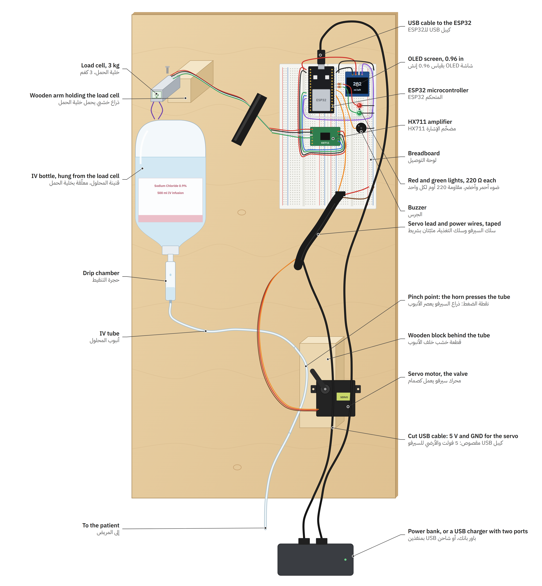
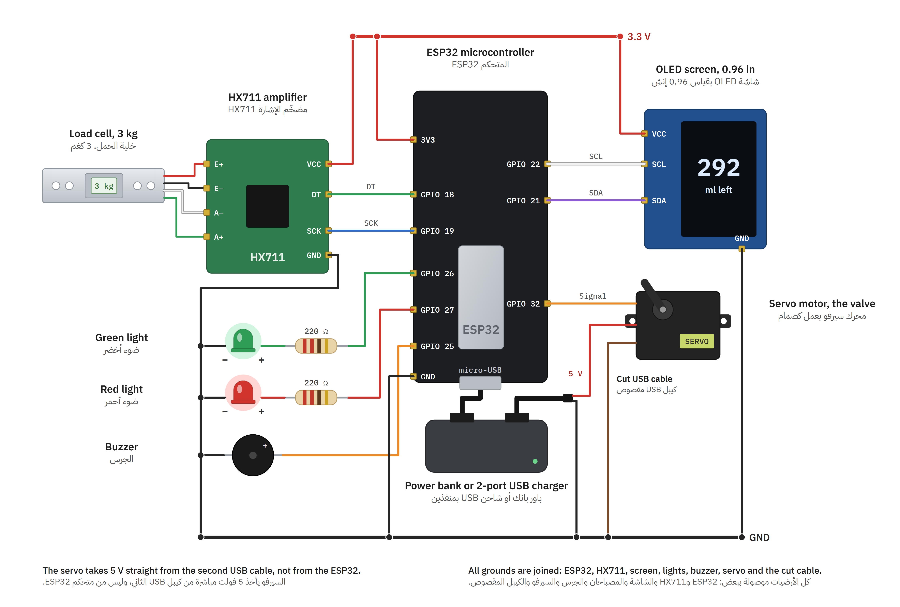
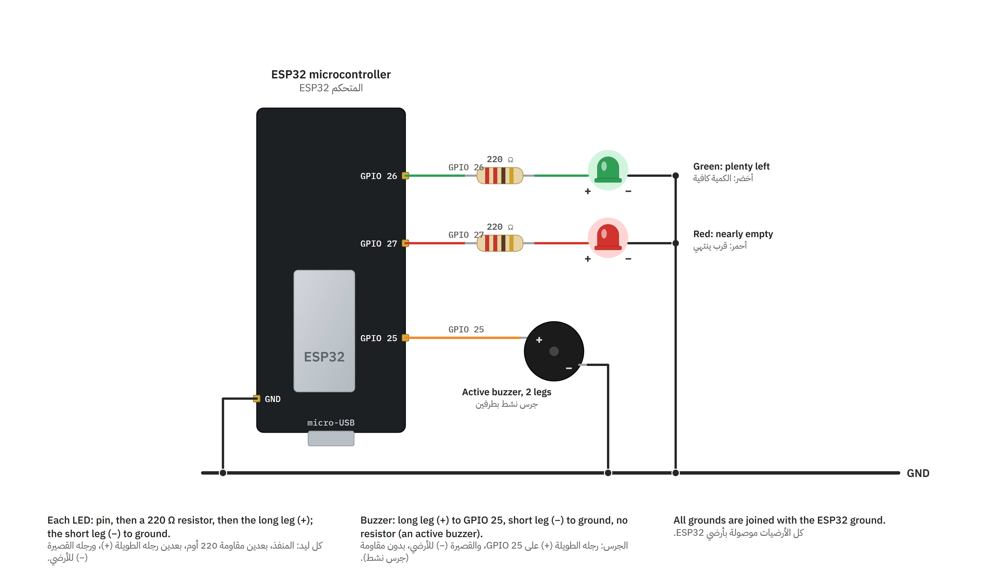

الجهاز نموذج أولي لمراقبة قنينة المحلول الوريدي. يقيس وزن القنينة باستمرار، ويستنتج منه الكمية المتبقية ومعدل التدفق والزمن المتبقي حتى النفاد، ويتيح فتح خط التسريب وإغلاقه بصمام ضغط يحركه محرك سيرفو. تُعرض النتائج على شاشة الجهاز، وعلى صفحة ويب محلية يخدمها الجهاز نفسه، وعلى لوحة تحكم منشورة على الإنترنت تتصل بالجهاز عبر بروتوكول MQTT.
يقوم مبدأ القياس على أن كثافة المحلول الملحي بتركيز 0.9% تقارب كثافة الماء، فيُعدّ كل غرام من الوزن الصافي مليلتراً واحداً من المحلول.
| الوظيفة | المكوّن | الدور |
|---|---|---|
| المتحكم الدقيق | ESP32 DevKit (ESP-WROOM-32) | معالجة القياسات، والتحكم بالمحرك، والشبكة، وخادم الويب. ثنائي النواة بتردد 240 MHz، ويدعم Wi-Fi بتردد 2.4 GHz. |
| حساس الوزن | خلية حمل قضيبية (Bar load cell) سعة 3 kg | تحويل وزن القنينة إلى إشارة كهربائية صغيرة عبر جسر ويتستون من مقاييس الانفعال (Strain gauges). |
| مضخّم ومحوّل | HX711 | تضخيم إشارة الجسر وتحويلها إلى قيمة رقمية بدقة 24 بت، بمعدل 10 عينات في الثانية. |
| المشغّل | محرك سيرفو MG945 | صمام ضغط (Pinch valve): يضغط ذراعه الأنبوب على قطعة خشبية فيوقف التدفق. |
| الشاشة | OLED 0.96 in، المتحكم SSD1306، دقة 128 × 64 | عرض الكمية المتبقية والوقت والمعدل وحالة الصمام وعنوان الصفحة. مثبتة رأسياً. |
| المؤشرات الضوئية | مصباحا LED، أخضر وأحمر، مع مقاومة 220 Ω لكل منهما | الأخضر: الحالة طبيعية. الأحمر: الكمية منخفضة أو توقف التدفق. |
| الجرس | جرس نشط (Active buzzer) بطرفين | تنبيه صوتي متقطع يرافق المصباح الأحمر. |
| لوحة التوصيل | لوحتا Breadboard بسعة 830 نقطة | توصيل المكونات دون لحام. |
| التغذية | باور بانك أو شاحن USB بمنفذين (5 V) | منفذ للمتحكم، ومنفذ للمحرك عبر كيبل USB مقصوص. |
| الهيكل | لوح خشبي، وذراع خشبي، وقطعة خشبية للضغط | تعليق خلية الحمل والقنينة، وتثبيت المحرك والأنبوب. |
ثُبّتت المكونات جميعها على لوح خشبي واحد يُعلَّق رأسياً، ليسهل نقل النموذج وعرضه. وروعي في التصميم أن يمر الحمل عبر خلية الحمل وحدها:


| المكوّن | الطرف | يتصل بـ |
|---|---|---|
| خلية الحمل | الأحمر، الأسود، الأخضر، الأبيض | HX711: E+، E−، A+، A− |
| HX711 | VCC، GND | 3V3، GND |
| HX711 | DT، SCK | GPIO 18، GPIO 19 |
| شاشة OLED | VCC، GND | 3V3، GND |
| شاشة OLED | SDA، SCL | GPIO 21، GPIO 22 |
| محرك السيرفو | الإشارة (البرتقالي) | GPIO 32 |
| محرك السيرفو | التغذية (الأحمر)، الأرضي (البني) | 5 V من كيبل USB المقصوص، والأرضي المشترك |
| المتحكم ESP32 | micro-USB | كيبل USB الأول من مصدر التغذية |
| المصباح الأخضر | الموجب عبر مقاومة 220 Ω، والسالب | GPIO 26، وGND |
| المصباح الأحمر | الموجب عبر مقاومة 220 Ω، والسالب | GPIO 27، وGND |
| الجرس | الموجب، والسالب | GPIO 25، وGND |
تعمل الشاشة وHX711 بجهد 3.3 V من منظم الجهد في لوحة ESP32، فتتوافق مستويات الإشارة مع منافذ المتحكم دون محوّل مستويات. ويتصل HX711 بالمتحكم عبر واجهة تسلسلية بسيطة من خطين (DT وSCK)، وتتصل الشاشة بناقل I2C على العنوان 0x3C.

يتصل كل مصباح بمنفذه عبر مقاومة 220 Ω، فيسحب نحو 5 mA من جهد 3.3 V، وطرفه السالب إلى الأرضي. ويتصل الجرس النشط بالمنفذ GPIO 25 مباشرة دون مقاومة، لأن دائرته الداخلية تحدد تياره وتولّد الصوت بمجرد وصول الجهد.
يُغذّى الجهاز بكيبلي USB من مصدر واحد بجهد 5 V، باور بانك أو شاحن بمنفذين:
فُصلت تغذية المحرك عن تغذية المتحكم لأن محرك السيرفو يسحب تياراً عالياً عند الحركة، فلو غُذّي من لوحة ESP32 لهبط جهدها واضطربت قراءات الميزان. ووُصلت الأرضيات كلها في نقطة مشتركة، ليكون لإشارة التحكم في المحرك مرجع جهد واحد مع المتحكم.
تبيّن أثناء الاختبار أن تشغيل المتحكم من منفذ USB في حاسوب محمول يسبب إعادة تشغيل متكررة. فبدء تشغيل راديو Wi-Fi يسحب تياراً لحظياً عالياً، فيهبط الجهد ويعمل كاشف هبوط الجهد (Brownout detector) فيعيد تشغيل الشريحة. عولجت المشكلة بتعطيل الكاشف خلال مرحلة بدء الشبكة فقط، ثم إعادة تفعيله فوراً. وتبقى التوصية تغذية الجهاز من باور بانك أو شاحن.
كُتب البرنامج الثابت (Firmware) بلغة C++ على إطار Arduino لشريحة ESP32، ويُبنى ويُرفع بأداة Arduino CLI. ويتكون من ثلاثة ملفات: iv_monitor.ino للقياس والتحكم والشبكة، وscreen.ino للشاشة، وpage.h للصفحة المحلية.
| المكتبة | الإصدار | الاستخدام |
|---|---|---|
| Arduino core for ESP32 | 3.3.12 | بيئة التشغيل، وWi-Fi، وPWM عبر LEDC، والذاكرة غير المتطايرة |
| HX711 Arduino Library (Bogdan Necula) | 0.7.5 | قراءة HX711 |
| WiFiManager (tzapu) | 2.0.17 | بوابة إعداد الشبكة (Captive portal) |
| PubSubClient | 2.8 | عميل MQTT |
| Adafruit SSD1306 وAdafruit GFX | 2.5.17 و1.13.0 | الرسم على الشاشة |
| mbedTLS (ضمن نواة ESP32) | TLS وحساب HMAC-SHA256 | |
| MQTT.js | 5.10.1 | عميل MQTT في المتصفح عبر WebSocket الآمن |
صُممت الحلقة الرئيسة دون انتظار حاجب (Non-blocking): تُقرأ عينة من HX711 فقط حين تكون جاهزة، فلا يتأخر خادم الويب ولا عميل MQTT. وفي كل دورة يُصفَّر مؤقت المراقبة، وتُتابَع حالة الشبكة، وتُخدم طلبات DNS وHTTP وMQTT. وتُحدَّث القياسات مرة كل ثانية، والشاشة مرتين في الثانية.
تُحسب الكمية المتبقية بطرح وزن القنينة الفارغة مع الأنبوب من الوزن المقاس:
ويُحسب معدل التدفق من ميل خط المربعات الصغرى (Least squares) لقراءات آخر 5 دقائق، بقراءة واحدة في الثانية. واختيرت نافذة بالدقائق لأن نقص الوزن في الدقيقة الواحدة قريب من مستوى الضجيج، ولا يُعرض المعدل قبل دقيقتين من القراءات:
| الحالة | الشرط |
|---|---|
| جمع القراءات | أقل من 120 ثانية من القراءات |
| طبيعي | المعدل محسوب، والكمية فوق حد التنبيه |
| الكمية منخفضة | الكمية المتبقية أقل من الحد المضبوط أو تساويه (50 ml افتراضياً) |
| توقف التدفق | المعدل أقل من 3 ml/h، والصمام غير مغلق، والكمية فوق الحد |
| الصمام مغلق | آخر أمر للصمام كان الإغلاق |
وإذا ضُبط حد للإغلاق التلقائي، يغلق المتحكم الصمام بنفسه عند بلوغه.
يُحسب الإزاحة (Offset) من متوسط 20 قراءة والخطاف فارغ، ثم يُحسب معامل المعايرة بتعليق وزن معروف:
تُحفظ المعايرة والإعدادات وحالة الصمام في الذاكرة غير المتطايرة (NVS) عبر مكتبة Preferences، فتبقى بعد انقطاع التيار.
يُولَّد نبض التحكم في المحرك مباشرة من وحدة LEDC في ESP32 بتردد 50 Hz ودقة 14 بت، دون مكتبة وسيطة. ويُحوَّل عرض النبض خطياً من 500 µs عند 0° إلى 2400 µs عند 180°:
يعمل راديو Wi-Fi في النمطين معاً: محطة (Station) متصلة براوتر المكان، ونقطة وصول (Access Point) خاصة باسم IV-Monitor على العنوان 192.168.4.1. تبقى نقطة الوصول تعمل دائماً، فيمكن الوصول إلى الجهاز في أي مكان، دون راوتر ولا إنترنت.
تتولى مكتبة WiFiManager إعداد الشبكة. إذا لم يجد الجهاز شبكة محفوظة، يفتح بوابة إعداد (Captive portal) على نقطة الوصول مدة 180 ثانية، يختار منها المستخدم الشبكة ويدخل كلمة مرورها. ويعيد خادم DNS داخلي توجيه كل الطلبات إلى صفحة الجهاز.
عند فقد الراوتر يحاول الجهاز إعادة الاتصال كل 15 ثانية، أو كل 60 ثانية إذا كان مستخدم متصلاً بنقطة الوصول، لأن البحث عن الشبكة يقطع اتصال ذلك المستخدم لحظياً. وإذا استمر الانقطاع 3 دقائق ولم يكن أحد متصلاً بنقطة الوصول، يعيد الجهاز التشغيل.
صفحة HTML واحدة مضمنة في البرنامج الثابت، يخدمها الجهاز على المنفذ 80، ويُعلن عنها باسم iv-monitor.local عبر بروتوكول mDNS. تستعلم الصفحة الحالة كل ثانية، وترسل الأوامر عبر الواجهة التالية:
| الطريقة | المسار | الوظيفة |
|---|---|---|
GET | / | الصفحة المحلية (مضمّنة في البرنامج الثابت) |
GET | /api/state | الحالة كاملة بصيغة JSON |
POST | /api/valve | to=open أو close: فتح الصمام أو إغلاقه |
POST | /api/valvestate | is=open أو closed: تصحيح الحالة المسجلة دون تحريك المحرك |
POST | /api/tare | تصفير الميزان |
POST | /api/cal | g: المعايرة بوزن معروف |
POST | /api/servo | deg: تحريك المحرك إلى زاوية للاختبار |
POST | /api/set | emptyG، lowMl، autoCloseMl، openDeg، closeDeg، alerts |
POST | /api/wifisetup | إعادة التشغيل على بوابة إعداد الشبكة |
يتصل الجهاز بخادم MQTT عام (broker.hivemq.com) عبر اتصال مشفر بـ TLS على المنفذ 8883. وإذا فشل الاتصال مرتين متتاليتين، يجرب المنفذ 1883 غير المشفر، ثم يعود إلى 8883 بالتناوب، لأن بعض الشبكات تحجب المنفذ 8883. وتزداد المهلة بين المحاولات من 10 ثوانٍ حتى دقيقتين، كي لا تعطّل محاولات الاتصال الفاشلة الشاشة والميزان.
| الموضوع (Topic) | الاتجاه | المحتوى |
|---|---|---|
ivmon/<id>/state | الجهاز ← اللوحة | الحالة بصيغة JSON كل ثانيتين، رسالة محفوظة (Retained) |
ivmon/<id>/status | الجهاز ← اللوحة | online عند الاتصال، وoffline رسالة وصية (Last Will) عند الانقطاع |
ivmon/<id>/cmd | اللوحة ← الجهاز | أمر موقّع: الطابع الزمني | الأمر | التوقيع |
ivmon/<id>/ack | الجهاز ← اللوحة | نتيجة تنفيذ الأمر أو سبب رفضه |
الخادم عام، فيمكن لأي طرف أن يقرأ الرسائل أو يرسل إليه. لذلك يُوقَّع كل أمر بخوارزمية HMAC-SHA256 بمفتاح تحكم مشترك بين الجهاز واللوحة. صيغة الأمر:
open، close، tare، cal، servo، set.اللوحة صفحة ويب ثابتة من ملف واحد (HTML وCSS وJavaScript)، دون خادم خلفي. تتصل بخادم MQTT من المتصفح مباشرة عبر WebSocket مشفر (wss://broker.hivemq.com:8884/mqtt) بمكتبة MQTT.js، وتشترك في مواضيع الحالة والتوفر والتأكيد. وتُوقّع الأوامر في المتصفح بواجهة Web Crypto، مع تنفيذ احتياطي لـ SHA-256 بلغة JavaScript للمتصفحات التي لا تتيحها.
تُنشر اللوحة على GitHub Pages عبر سير عمل GitHub Actions (.github/workflows/pages.yml). عند كل دفع (Push) إلى الفرع main، يرفع سير العمل مجلد dashboard وينشره تلقائياً على العنوان:
| المسار | المحتوى |
|---|---|
iv_monitor/ | البرنامج الثابت: القياس، والتحكم، والشبكة، والشاشة، والصفحة المحلية |
dashboard/index.html | لوحة التحكم على الإنترنت |
.github/workflows/pages.yml | سير عمل النشر |
README.md، SETUP-MQTT.md | تعليمات التشغيل والإعداد |
اختُبر النظام على النموذج بتاريخ 6 تشرين الثاني 2026. أُرسلت أوامر MQTT من برنامج اختبار يتصل بالخادم بالطريقة نفسها التي تتصل بها اللوحة، واختُبرت الواجهة المحلية بطلبات HTTP مباشرة:
| الاختبار | النتيجة |
|---|---|
| الاتصال بالراوتر وتشغيل الشبكة الخاصة معاً | نجح: عنوان على الراوتر، وشبكة IV-Monitor ظاهرة في الوقت نفسه |
| الاتصال بخادم MQTT عبر TLS على المنفذ 8883 | نجح |
| أوامر الفتح والإغلاق وتفعيل التنبيه وإيقافه عبر MQTT | نجح، مع وصول رسالة التأكيد |
| أمر بتوقيع خاطئ | رُفض: wrong control key |
| أمر قديم (إعادة إرسال) | رُفض: command too old |
| واجهة الصفحة المحلية واسم iv-monitor.local | نجح، وأُعيد الخطأ 400 لمعاملات غير صالحة و404 لمسار غير موجود |
| حفظ حالة الصمام بعد إعادة التشغيل | نجح |
| لوحة GitHub Pages | عرضت «الجهاز متصل» مع قراءات حية |
| التشغيل من منفذ USB في حاسوب محمول | إعادة تشغيل متكررة بسبب هبوط الجهد، عولجت (القسم 5) |
هذا الجهاز نموذج أولي لإثبات الفكرة، وليس جهازاً طبياً معتمداً. ومن قيوده:
يحتوي الملف المضغوط المرفق iv-monitor-code.zip على الشيفرة المصدرية بإصدارها الأخير، وهو المنشور في المستودع، وعلى الملفات التالية داخل المجلد iv-monitor:
| الملف | المحتوى | الحجم |
|---|---|---|
iv_monitor/iv_monitor.ino | الملف الرئيس للبرنامج الثابت: الثوابت والإعدادات الافتراضية، وقراءة HX711 وترشيحها، وحساب الكمية والمعدل، والتحكم بالمحرك، وإعداد الشبكة، وخادم الويب وواجهة HTTP، وعميل MQTT والتحقق من توقيع الأوامر، والحفظ في الذاكرة غير المتطايرة، والأوامر عبر المنفذ التسلسلي. | 31.1 KB 736 سطراً |
iv_monitor/screen.ino | رسم شاشة OLED: الكمية المتبقية، والزمن المتبقي، والمعدل، وشريط حالة الصمام، وعنوان الصفحة، وشاشات بدء التشغيل والشبكة. يُبنى مع الملف الرئيس في البرنامج نفسه. | 9.9 KB 284 سطراً |
iv_monitor/page.h | الصفحة المحلية كاملة (HTML وCSS وJavaScript) نصاً ثابتاً مضمّناً في البرنامج الثابت، يخدمه الجهاز على العنوان /. | 16.1 KB 271 سطراً |
dashboard/index.html | لوحة التحكم على الإنترنت: صفحة ثابتة تتصل بخادم MQTT من المتصفح، وتعرض الحالة الحية، وتوقّع الأوامر وترسلها. يحدد الثابت DEVICE فيها الخادم واسم الجهاز ومفتاح التحكم. | 20.3 KB 362 سطراً |
.github/workflows/pages.yml | سير عمل GitHub Actions الذي ينشر مجلد dashboard على GitHub Pages عند كل دفع إلى الفرع main. | 30 سطراً |
figures/fig1-board.png | رسم الجهاز كما بُني، مع أسماء أجزائه (الشكل 2 في هذه الوثيقة). | 2.6 MB |
figures/fig2-wiring.png | مخطط التوصيل الكهربائي (الشكل 3 في هذه الوثيقة). | 450.1 KB |
figures/fig3-lights-buzzer.png | توصيل المصباحين والجرس (الشكل 4 في هذه الوثيقة). | 312.5 KB |
tech-guide.pdf | هذه الوثيقة. |
iv_monitor.ino| الثابت | المعنى |
|---|---|
AP_SSID | اسم شبكة الجهاز الخاصة: IV-Monitor |
AP_PASS | كلمة مرور شبكة الجهاز: 12345678 |
DEFAULT_MQTT_HOST | خادم MQTT الافتراضي: broker.hivemq.com |
DEFAULT_MQTT_PORT | منفذ الاتصال الافتراضي بـ TLS: 8883 |
DEFAULT_CONTROL_KEY | مفتاح توقيع الأوامر، ويطابق قيمة key في الثابت DEVICE بملف اللوحة |
PIN_DT، PIN_SCK | منفذا HX711: GPIO 18 وGPIO 19 |
PIN_SERVO | منفذ إشارة المحرك: GPIO 32 |
PIN_GREEN، PIN_RED | منفذا المصباحين: GPIO 26 وGPIO 27 |
PIN_BUZZ | منفذ الجرس: GPIO 25 |
esp32 by Espressif بالإصدار 3.3.12، والمكتبات المذكورة في القسم 6 بإصداراتها، من مدير المكتبات في Arduino IDE.iv_monitor/iv_monitor.ino، فتظهر الملفات الثلاثة في تبويبات المشروع نفسه، وتُبنى معاً.ESP32 Dev Module ومنفذ الجهاز، ثم يُرفع البرنامج. وتُقرأ الرسائل على المنفذ التسلسلي بسرعة 115200.وبأداة سطر الأوامر Arduino CLI، من داخل المجلد iv_monitor:
يشغل البرنامج المبني نحو 1.26 MB، أي 95% من مساحة البرنامج في الشريحة.
يُرفع المجلد dashboard وسير العمل .github/workflows/pages.yml إلى مستودع على GitHub، وتُفعَّل خدمة GitHub Pages بمصدر GitHub Actions، فتُنشر اللوحة تلقائياً عند كل دفع إلى الفرع main. ويمكن فتح الملف dashboard/index.html كذلك من أي خادم ويب ثابت، لأنه لا يعتمد على خادم خلفي.
تتطابق قيم اسم الجهاز والخادم ومفتاح التحكم في الثابت DEVICE بملف اللوحة مع قيم الجهاز، ويُشتق اسم الجهاز من رقم الشريحة، وهو في هذا النموذج iv-c83d26.